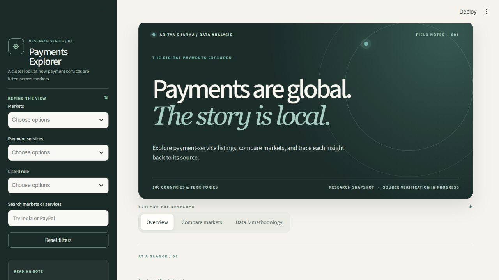

Digital Payments
Explorer
A research explorer for 300 payment-service listings across 100 countries and territories. Filter markets, compare recorded services, and inspect the evidence gaps behind the numbers.
Explore the projectThe interactive dashboard runs locally. See how to open it
My contribution & approach
The original research was collaborative. I reshaped its market and service records into a documented analysis with Python, SQL, Excel, Power BI and a Streamlit dashboard. The charts count mentions in the source dataset, not transaction volume or verified market share; original percentages are flagged for further source review.

Interactive Streamlit dashboard · Local application preview